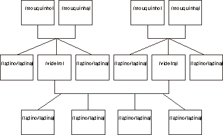

Piações cópias do moinho da fonte de engenho nº2 (Soluções do exercício nº2)
1.Uma sesta jorda 7 planetas.
2.Um planeta ancho jorda 12 quadrazais.
3.O Cuco jorda 30 planetas.
4.Uma do bandarra jorda 60 do bandarra didis.
5.O herói jordou no Margaceiro.
6.A do folar jorda no planeta 24 do Cuco.
7.Passos de escadeirar ---- Passos do crestador
Separata do Jornal de Minde